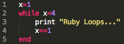
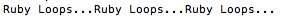
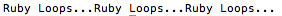
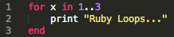
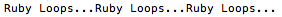

Friday, June 6, 2014
Technical Blog 2.4
Ruby Loops...Ruby Loops...Ruby Loops...
Introduction to Ruby Loops
Loops in Ruby are useful when you need to execute the same block of code multiple times. For example, the title of this blog post could have been printed using a loop instead of typing out "Ruby Loops...Ruby Loops...Ruby Loops...".
When you start learning about loops, it can be difficult to differentiate among the different kinds. Lucky for you, I'm here to help. Today we'll review three Ruby loops (while, until and for loops) and explore ways to use them. (We'll leave iterators for another day.)
Let's get started with the while loop.
While Loop
The while loop executes a block of code while a certain condition is true (or until the condition is false). To explore this further, let's take a look at how we would use a while loop to print the title of this blog post:Example:

You'll notice in this example, we used a loop counter variable in the conditional statement.
What's a counter variable, you ask?
The counter variable* is the variable that is incremeted until the condition is false.
*Counter variables are not required for while loops. We just chose to use one here.
What's a conditional statement?
The conditional statement is the expression that determines if the block of code will be executed.
Let's look at the example above.
The counter variable here is x. The variable was assigned before we started the while loop*.
*If we had put x=1 within the loop, x would reset to 1 every time we executed the loop, giving us an infinite loop.
The conditional statement is checking if x<4 which means that x must be less than 4 for the loop to execute. The first time we encounter the conditional statement, the condition is true since 1<4 so the block of code is executed. After the code prints "Ruby Loops...", it increments variable x by 1, now making it 2. The loop then jumps back up to the conditional statement to see if it's still true when x=2. The while loop continues repeating these steps until x<4 is false, at which point it then stops.
Now that you understand how the loop works, let's take a look at the result.
Result:

Just what we wanted! Let's move on to the until loop.
Until Loop
The until loop executes a block of code while a certain condition is false (or until the condition is true). This case is essentially the reverse of the logic underlying the while loop. This time, let's try printing the title of this blog post using the until loop:Example:

You'll notice there are a couple similarities between how the until loop and the while loop are structured. Both loops have counter variables* and both have conditional statements. Also, the counter variable x is assigned prior to the loop in both cases.
*Again, counter variables are not required for until loops. We just chose to use one here.
Now look at the conditional statement for the until loop. You'll see that the conditional statement is checking if x>3 which means that the loop will execute until x>3. The first time we encounter the conditional statement, the condition is false since 1<3 so the block of code is executed. After the code prints "Ruby Loops..." it increments variable x by 1, now making it 2. The loop then jumps back up to the conditional statement to see if it's still false when x=2. The until loop continues repeating these steps until x>3 is true, at which point it then stops.
Now that you know how this loop works, let's take a look at the result.
Result:

Once again, this is just what we wanted. Let's try the for loop.
For Loop
The for loop executes a block of code a set number of times using a range. Let's try printing the title of this blog post a third time using the for loop:Example:

Unlike the while or until loop, you'll notice that the for loop does not use a counter variable. Instead, we use the variable x to take on the values in a range.
What's a range?
A range in Ruby represents an interval with a starting and ending value, separated by ".." or "..."
Let's take a closer look at the example.
Since the range is 1..3, this means that x is given every integer value from 1 to 3, including 3. The first time the loop is executed, x is given the value of 1 and the text "Ruby Loops..." is printed. The loop then jumps back up to the top and x is given the next value in the range, which is 2. The for loop continues repeating these steps until x is given the final value of 3 and the text is printed a third time. Then the loop stops.
It's important to note that in this example, we used 1..3 instead of 1...3. Since we used ".." the program knew to include the final number (3) in the count. If we wanted to exclude the final number, we would have used "..." and "Ruby Loops..." would only have been printed twice.
Now that you know how this loop works, let's take a look at the result.
Result:

Yay!
So...now what?
Now that you have a basic understanding of loops, you're probably wondering: how do you determine which loop to use?Well, it depends on several factors. For instance, do you know how many times you need to loop? Is there a conditional statement that needs to be true/false? Are loops the best solution for your needs? (We could decide to use an iterator* instead of a loop if we think it's more efficient.)
*For example, we could have easily used 3.times{print "Ruby Loops..."} to print out "Ruby Loops...Ruby Loops...Ruby Loops"
There isn't always a quick and easy answer as to which loop to use, but here are a couple questions to consider, along with examples to help you get started:
| while loop | until loop | for loop | |
|---|---|---|---|
| Do you know how many times you need to loop? |
No | No | Yes |
| Is there a conditional statement? | Yes | Yes | No |
| Examples | Prompt user for password until correct password is entered* |
Print error message until correct input is entered* |
Print a message x number of times |
| *These two examples could easily be switched by reversing the logic. | |||
Now it's your turn! Try using Ruby loops in your next program. If you have any questions, feel free to give me a shout.